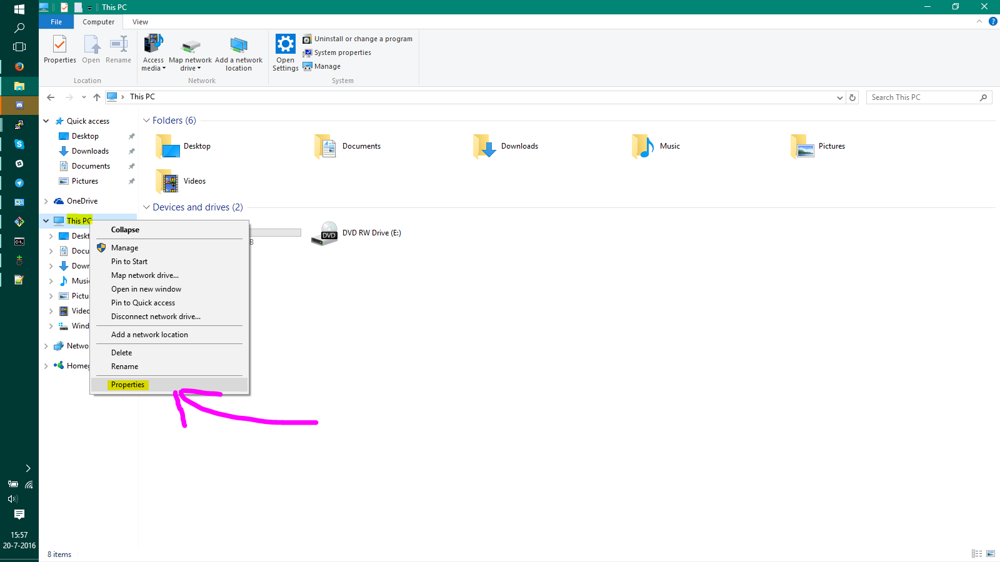
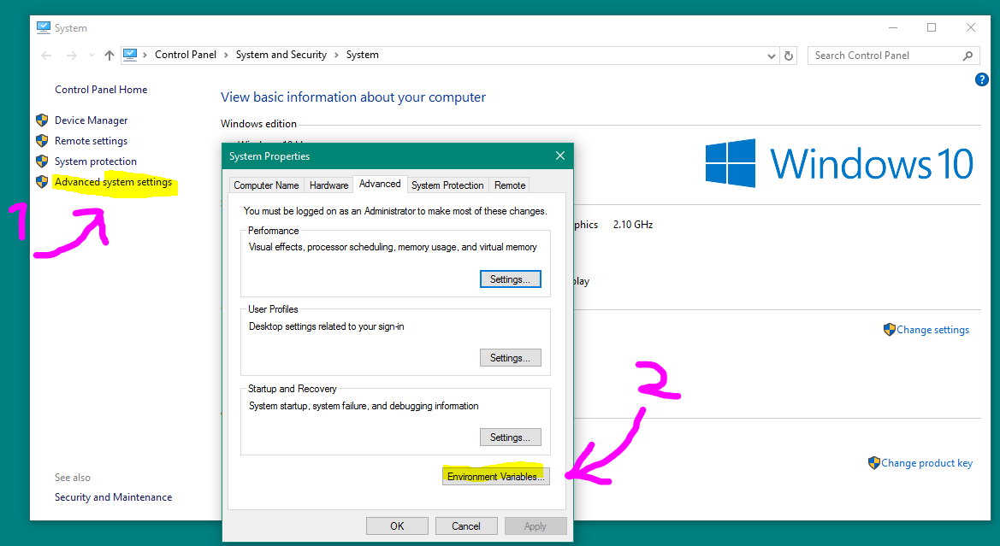
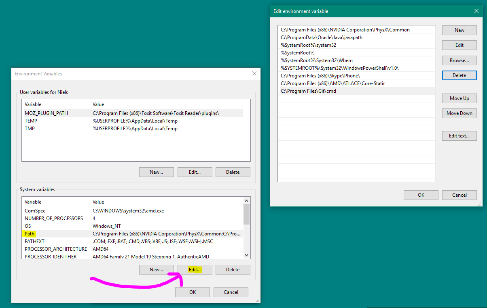
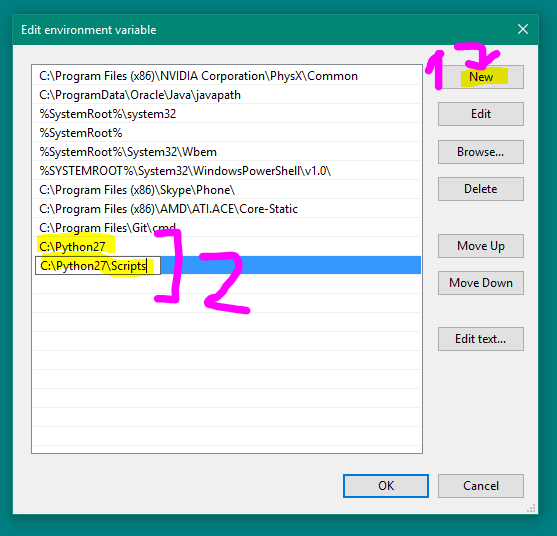

Windows ENV Fix¶
A common error is:
'python' is not recognized as an internal or external command, operable program or batch file.
or:
'pip' is not recognized as an internal or external command, operable program or batch file.
Luckily for you, this error is easy to solve!
What’s wrong:¶
Windows defines commands in something called “environment variables”, if a program isn’t here, Windows doesn’t understand what you mean.
How to solve this:¶
If you install python, it can automatically set the correct environment variables. However, if you didn’t enable this feature, you need to do it manually.
How to set them manually:¶
Step 1] Press the WindowsKey + Pause/Break (Or right click on “This PC” and select properties)

Step 2] Click on “Advanced system settings”, a new window will appear. Now click “Environment Variables”

Step 3] Another window will pop up, now find “Path” and click “Edit...”, then another window will pop up.

Step 4] Hit “New” and enter “C:\Python27”, hit “New” again and now enter “C:\Python27\Scripts”

Step 5] Close all windows by pressing “OK” and restart the command prompt, now everything should be working fine!
Credit: Langoor2